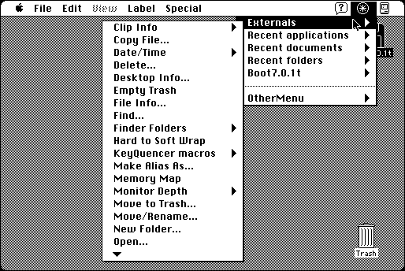

Download
OtherMenu_final.zip (287K) OtherMenu 2.0.5 repackaged into a zipped hfs disk image and checksum file. The disk image can be mounted with Mini vMac.
OtherMenu_final.sit (303K) OtherMenu 2.0.5 in the original format.
copyright: James W. Walker
mod date: Jan 21, 2001
license: Freeware, former shareware
from url :
James Walker’s Mac Stuff
Creates “a system-wide hierarchical menu somewhat like the Apple menu. Besides opening applications and documents, it runs 28 little utilities called externals. In a directory dialog (Open/Save dialog), you can use the menu to select a file or folder. Compatible with System 7 through 9.1.”.

The SDK allows you to create your own externals for OtherMenu
OtherMenu-2.0-SDK.zip (16K) OtherMenu 2.0 SDK repackaged into a zipped hfs disk image and checksum file. The disk image can be mounted with Mini vMac.
OtherMenu-2.0-SDK.sit.bin (16K) OtherMenu 2.0 SDK in the original format.
If you find these downloads useful, please consider helping the Gryphel Project, which hosts them.
Here are the md5 checksums for the downloads, signed with Gryphel Key 5:
--------- GRY SIGNED TEXT --------- 38f8f6574fc4e5ad04e566c9068c5802 OtherMenu_final.zip 26510d8b62de2e5bf0a35973f1890ed2 OtherMenu_final.sit 0d2f80712010d3b9142596b58c42f927 OtherMenu-2.0-SDK.zip 4c3fc57e1ac367627b42f881086fe056 OtherMenu-2.0-SDK.sit.bin ------- BEGIN GRY SIGNATURE ------- Gry/4Xa8CFcUzxdN/GbD+hIWT/F+yS8qjNVhOaMCZqEGdX1f7lMe+7I0EQ++LRLc wBGAU9cQX+y1kFUMxIQtgq2mVmkIQuJjJmodVIATN+5sglm/qq3BfokbW3k9wsNa 3LZGfLDgz+e4pfhuSJ592G/+nt4JKNr8Ac5NgOzeoy0fu0PEokD8Ds7bdYJFErF7 -------- END GRY SIGNATURE --------